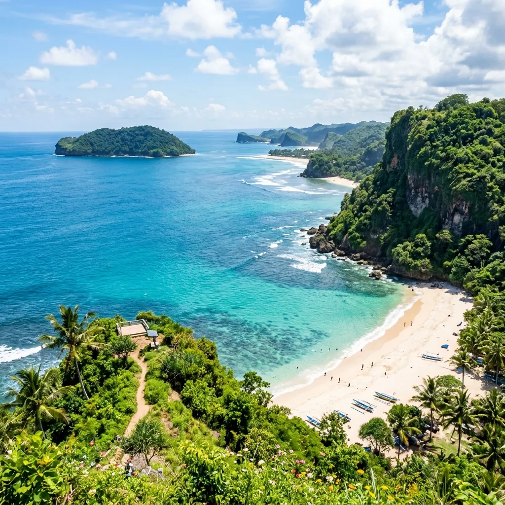

Rekomendasi pantai terbaik di Malang Selatan mencakup Balekambang untuk wisata budaya, Tiga Warna dan Clungup untuk snorkeling, serta Ngliyep untuk suasana tenang berhutan pinus, masing-masing cocok untuk kebutuhan wisata berbeda.
- Balekambang unggul dari sisi ikon budaya dan fotografi.
- Tiga Warna dan Clungup cocok untuk snorkeling di kawasan konservasi.
- Ngliyep menawarkan suasana teduh dengan hutan pinus.
- Sendang Biru berfungsi sebagai gerbang menuju Pulau Sempu.
- Setiap pantai memiliki karakter ombak dan fasilitas yang berbeda.
Pantai Mana yang Paling Cocok untuk Keluarga?
Pantai Balekambang umumnya dianggap paling cocok untuk kunjungan keluarga karena area parkir luas, fasilitas dasar yang lebih lengkap, dan area pasir yang landai di beberapa titik.
Selain Balekambang, Sendang Biru juga menjadi pilihan keluarga karena suasananya yang lebih ramai oleh aktivitas nelayan dan warung makan di sekitar pelabuhan, sehingga anak-anak dapat menikmati suasana pantai sambil melihat aktivitas kapal nelayan.
Bagi keluarga yang membawa anak kecil, penting memperhatikan zona ombak besar di kedua pantai ini dan tetap mengawasi anak saat berada di dekat air.
Pantai Mana yang Cocok untuk Snorkeling?
Pantai Tiga Warna dan Clungup, yang berada dalam kawasan Clungup Mangrove Conservation, menjadi pilihan utama untuk snorkeling karena air lautnya relatif tenang dan jernih dibanding pantai lain di kawasan Malang Selatan.
Kedua pantai ini menerapkan sistem kuota harian untuk menjaga kelestarian terumbu karang, sehingga wisatawan yang ingin snorkeling perlu melakukan reservasi lebih awal melalui pengelola resmi kawasan konservasi.
Segara Anakan di Pulau Sempu juga menawarkan laguna tenang yang kerap dikaitkan dengan aktivitas snorkeling ringan, meski akses menuju pulau ini memerlukan izin khusus karena berstatus cagar alam.
Pantai Mana yang Paling Ikonik untuk Foto?
Pantai Balekambang menjadi pantai paling ikonik untuk fotografi berkat keberadaan pura di atas karang yang menjorok ke laut, menyerupai ikon Tanah Lot di Bali, terutama saat air surut sehingga jembatan penghubung terlihat jelas.
Pantai Ngliyep juga menawarkan sudut foto menarik berkat kombinasi tebing karang dan hutan pinus di sekitarnya, memberi nuansa berbeda dibanding pantai berpasir terbuka.
Bagi pencari sudut foto dengan gradasi warna air laut, Tiga Warna menawarkan pemandangan air yang berubah warna dari hijau kebiruan hingga biru tua tergantung kedalaman dan cuaca saat kunjungan.
Bagaimana Karakter Ombak di Masing-Masing Pantai?
Karakter ombak di pantai Malang Selatan bervariasi karena posisinya yang menghadap langsung Samudra Hindia. Balekambang dan Ngliyep umumnya memiliki ombak lebih besar, sehingga berenang perlu mengikuti zona aman yang ditandai pengelola.
Sebaliknya, pantai dalam kawasan konservasi seperti Tiga Warna dan Clungup memiliki teluk kecil yang menahan ombak besar dari laut lepas, sehingga air di area teluk relatif lebih tenang dan aman untuk berenang maupun snorkeling.
Perbedaan karakter ombak ini menjadi salah satu faktor penting saat memilih pantai sesuai kebutuhan, terutama bagi wisatawan yang membawa anak-anak atau berencana melakukan aktivitas air.
FAQ
Pantai mana yang paling ramai dikunjungi wisatawan?
Pantai Balekambang termasuk yang paling ramai karena aksesibilitas dan daya tarik ikoniknya.
Apakah semua pantai di Malang Selatan cocok untuk snorkeling?
Tidak semua, snorkeling lebih disarankan di kawasan teluk tenang seperti Tiga Warna dan Clungup.
Apakah perlu izin khusus untuk mengunjungi Pulau Sempu?
Ya, Pulau Sempu berstatus cagar alam sehingga kunjungan memerlukan izin dari otoritas terkait.
Arya
Siswa Skariga yang sedang belajar di Gm Academy.